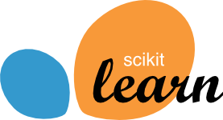

About us#
History#
This project was started in 2007 as a Google Summer of Code project by David Cournapeau. Later that year, Matthieu Brucher started work on this project as part of his thesis.
In 2010 Fabian Pedregosa, Gael Varoquaux, Alexandre Gramfort and Vincent Michel of INRIA took leadership of the project and made the first public release, February the 1st 2010. Since then, several releases have appeared following an approximately 3-month cycle, and a thriving international community has been leading the development.
Governance#
The decision making process and governance structure of scikit-learn is laid out in the governance document.
The people behind scikit-learn#
Scikit-learn is a community project, developed by a large group of people, all across the world. A few teams, listed below, have central roles, however a more complete list of contributors can be found on github.
Maintainers Team#
The following people are currently maintainers, in charge of consolidating scikit-learn’s development and maintenance:

Jérémie du Boisberranger

Joris Van den Bossche

Loïc Estève

Thomas J. Fan

Alexandre Gramfort

Olivier Grisel

Yaroslav Halchenko

Tim Head

Nicolas Hug

Adrin Jalali

Julien Jerphanion

Guillaume Lemaitre

Adam Li

Christian Lorentzen

Jan Hendrik Metzen

Andreas Mueller

Vlad Niculae

Joel Nothman

Hanmin Qin

Omar Salman

Bertrand Thirion

Tom Dupré la Tour

Gael Varoquaux

Nelle Varoquaux

Yao Xiao

Roman Yurchak

Meekail Zain
Note
Please do not email the authors directly to ask for assistance or report issues. Instead, please see What’s the best way to ask questions about scikit-learn in the FAQ.
See also
How you can contribute to the project.
Documentation Team#
The following people help with documenting the project:

Arturo Amor

Lucy Liu
Yao Xiao
Contributor Experience Team#
The following people are active contributors who also help with triaging issues, PRs, and general maintenance:

Juan Carlos Alfaro Jiménez
Lucy Liu

Maxwell Liu

Juan Martin Loyola

Sylvain Marié

Norbert Preining

Reshama Shaikh

Albert Thomas

Maren Westermann
Communication Team#
The following people help with communication around scikit-learn.

Lauren Burke-McCarthy

François Goupil
Emeritus Core Developers#
The following people have been active contributors in the past, but are no longer active in the project:
Mathieu Blondel
Matthieu Brucher
Lars Buitinck
David Cournapeau
Noel Dawe
Vincent Dubourg
Edouard Duchesnay
Alexander Fabisch
Virgile Fritsch
Satrajit Ghosh
Angel Soler Gollonet
Chris Gorgolewski
Jaques Grobler
Brian Holt
Arnaud Joly
Thouis (Ray) Jones
Kyle Kastner
manoj kumar
Robert Layton
Wei Li
Paolo Losi
Gilles Louppe
Vincent Michel
Jarrod Millman
Alexandre Passos
Fabian Pedregosa
Peter Prettenhofer
(Venkat) Raghav, Rajagopalan
Jacob Schreiber
杜世橋 Du Shiqiao
Jake Vanderplas
David Warde-Farley
Ron Weiss
Emeritus Communication Team#
The following people have been active in the communication team in the past, but no longer have communication responsibilities:
Reshama Shaikh
Emeritus Contributor Experience Team#
The following people have been active in the contributor experience team in the past:
Chiara Marmo
Citing scikit-learn#
If you use scikit-learn in a scientific publication, we would appreciate citations to the following paper:
Scikit-learn: Machine Learning in Python, Pedregosa et al., JMLR 12, pp. 2825-2830, 2011.
Bibtex entry:
@article{scikit-learn,
title={Scikit-learn: Machine Learning in {P}ython},
author={Pedregosa, F. and Varoquaux, G. and Gramfort, A. and Michel, V.
and Thirion, B. and Grisel, O. and Blondel, M. and Prettenhofer, P.
and Weiss, R. and Dubourg, V. and Vanderplas, J. and Passos, A. and
Cournapeau, D. and Brucher, M. and Perrot, M. and Duchesnay, E.},
journal={Journal of Machine Learning Research},
volume={12},
pages={2825--2830},
year={2011}
}
If you want to cite scikit-learn for its API or design, you may also want to consider the following paper:
API design for machine learning software: experiences from the scikit-learn project, Buitinck et al., 2013.
Bibtex entry:
@inproceedings{sklearn_api,
author = {Lars Buitinck and Gilles Louppe and Mathieu Blondel and
Fabian Pedregosa and Andreas Mueller and Olivier Grisel and
Vlad Niculae and Peter Prettenhofer and Alexandre Gramfort
and Jaques Grobler and Robert Layton and Jake VanderPlas and
Arnaud Joly and Brian Holt and Ga{\"{e}}l Varoquaux},
title = {{API} design for machine learning software: experiences from the scikit-learn
project},
booktitle = {ECML PKDD Workshop: Languages for Data Mining and Machine Learning},
year = {2013},
pages = {108--122},
}
Artwork#
High quality PNG and SVG logos are available in the doc/logos/ source directory.
Funding#
Scikit-learn is a community driven project, however institutional and private grants help to assure its sustainability.
The project would like to thank the following funders.
:probabl. employs Adrin Jalali, Arturo Amor, François Goupil, Guillaume Lemaitre, Jérémie du Boisberranger, Loïc Estève, Olivier Grisel, and Stefanie Senger.
The Members of the Scikit-learn Consortium at Inria Foundation help at maintaining and improving the project through their financial support.
NVidia funds Tim Head since 2022 and is part of the scikit-learn consortium at Inria.
Microsoft funds Andreas Müller since 2020.
Quansight Labs funds Lucy Liu since 2022.
The Chan-Zuckerberg Initiative and Wellcome Trust fund scikit-learn through the Essential Open Source Software for Science (EOSS) cycle 6.
It supports Lucy Liu and diversity & inclusion initiatives that will be announced in the future.
Tidelift supports the project via their service agreement.
Past Sponsors#
Quansight Labs funded Meekail Zain in 2022 and 2023, and funded Thomas J. Fan from 2021 to 2023.
Columbia University funded Andreas Müller (2016-2020).
The University of Sydney funded Joel Nothman (2017-2021).
Andreas Müller received a grant to improve scikit-learn from the Alfred P. Sloan Foundation . This grant supported the position of Nicolas Hug and Thomas J. Fan.
INRIA actively supports this project. It has provided funding for Fabian Pedregosa (2010-2012), Jaques Grobler (2012-2013) and Olivier Grisel (2013-2017) to work on this project full-time. It also hosts coding sprints and other events.
Paris-Saclay Center for Data Science funded one year for a developer to work on the project full-time (2014-2015), 50% of the time of Guillaume Lemaitre (2016-2017) and 50% of the time of Joris van den Bossche (2017-2018).
NYU Moore-Sloan Data Science Environment funded Andreas Mueller (2014-2016) to work on this project. The Moore-Sloan Data Science Environment also funds several students to work on the project part-time.
Télécom Paristech funded Manoj Kumar (2014), Tom Dupré la Tour (2015), Raghav RV (2015-2017), Thierry Guillemot (2016-2017) and Albert Thomas (2017) to work on scikit-learn.

The Labex DigiCosme funded Nicolas Goix (2015-2016), Tom Dupré la Tour (2015-2016 and 2017-2018), Mathurin Massias (2018-2019) to work part time on scikit-learn during their PhDs. It also funded a scikit-learn coding sprint in 2015.
The Chan-Zuckerberg Initiative funded Nicolas Hug to work full-time on scikit-learn in 2020.
The following students were sponsored by Google to work on scikit-learn through the Google Summer of Code program.
2007 - David Cournapeau
2011 - Vlad Niculae
2012 - Vlad Niculae, Immanuel Bayer
2013 - Kemal Eren, Nicolas Trésegnie
2014 - Hamzeh Alsalhi, Issam Laradji, Maheshakya Wijewardena, Manoj Kumar
2015 - Raghav RV, Wei Xue
2016 - Nelson Liu, YenChen Lin
The NeuroDebian project providing Debian packaging and contributions is supported by Dr. James V. Haxby (Dartmouth College).
The following organizations funded the scikit-learn consortium at Inria in the past:
Coding Sprints#
The scikit-learn project has a long history of open source coding sprints with over 50 sprint events from 2010 to present day. There are scores of sponsors who contributed to costs which include venue, food, travel, developer time and more. See scikit-learn sprints for a full list of events.
Donating to the project#
If you are interested in donating to the project or to one of our code-sprints, please donate via the NumFOCUS Donations Page.
All donations will be handled by NumFOCUS, a non-profit organization which is managed by a board of Scipy community members. NumFOCUS’s mission is to foster scientific computing software, in particular in Python. As a fiscal home of scikit-learn, it ensures that money is available when needed to keep the project funded and available while in compliance with tax regulations.
The received donations for the scikit-learn project mostly will go towards covering travel-expenses for code sprints, as well as towards the organization budget of the project [1].
Notes
Infrastructure support#
We would also like to thank Microsoft Azure, Cirrus Cl, CircleCl for free CPU time on their Continuous Integration servers, and Anaconda Inc. for the storage they provide for our staging and nightly builds.